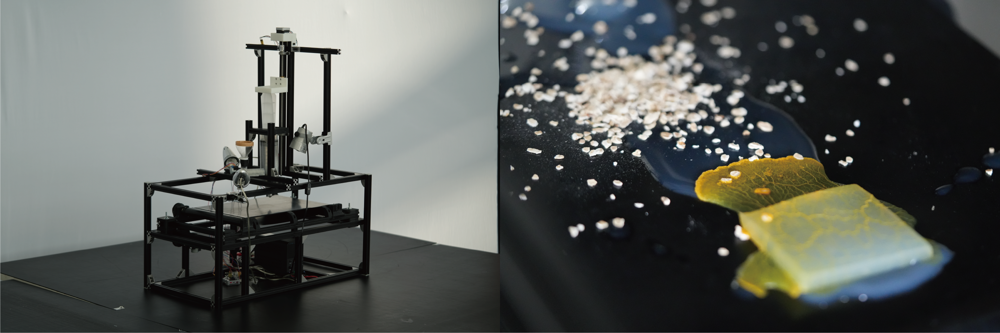
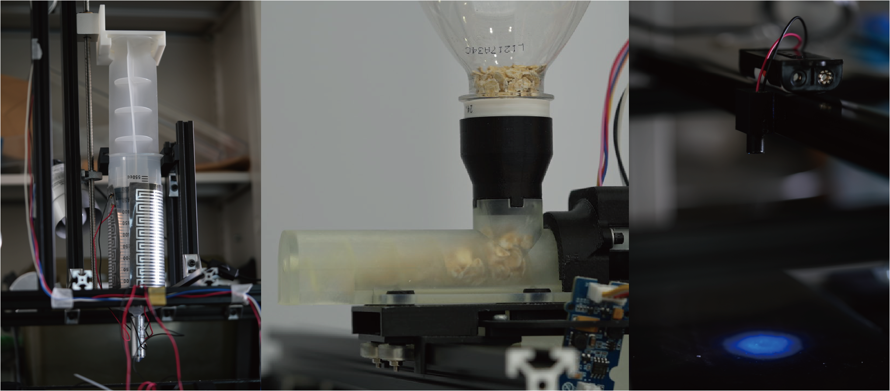

ランニングマシーンを粘菌が無限にランニングする装置の開発。この装置によってユーザは粘菌の様子を観察もしくは簡易的な実験を行うことができる。


本提案で扱う粘菌は真正粘菌のモジホコリという種類である．粘菌は栄養を効率良く運ぶ最短経路に変形する特性，導電性，着色性等を備えており，生物の特性を生かしたセンサ・アクチュエータとして活用できる可能性がある．粘菌はHCI研究や芸術表現にとって可能性のあるマテリアルであるが，粘菌の培養を日常生活環境で行うことは難しい．
そこで本研究では，粘菌の安定した培養だけを目的とせず，粘菌の栄枯盛衰の様子を眺めて楽しみながら，粘菌の性質を意図的に変化させて粘菌のバリエーションを豊かにし，粘菌を活用した表現を行うための簡易的な実験を行える場を提供する．本提案では主にその簡易アタッチメントに焦点を当てる．
粘菌ファブリケーションの利活用の方向として回路/食事/アート作成やストリーミングによる粘菌育成の様子の配信を考えており、WISSの発表では粘菌の移動経路への干渉および着色によるアート作品への応用のデモ発表を行う。今後これらのアタッチメントを拡充しより多彩な粘菌を用いた表現ができる土壌となることを目指す